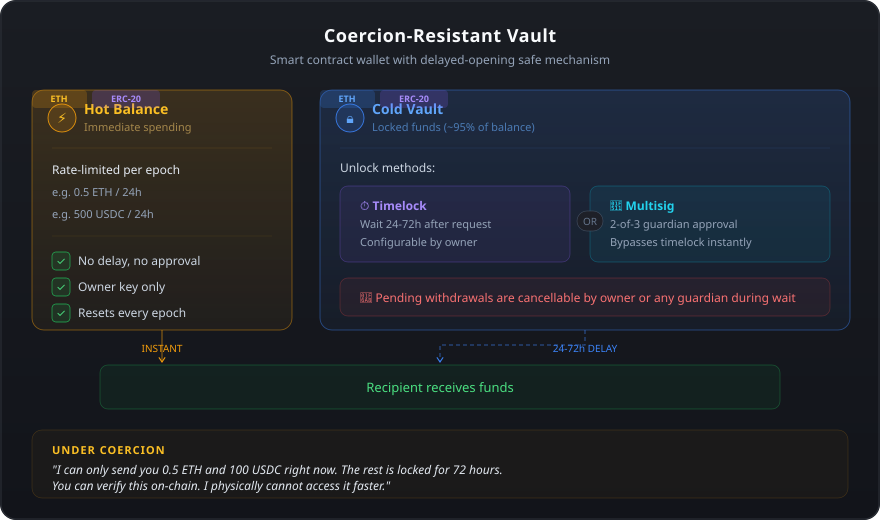

ERC-8238 | Step-by-step guide
A smart contract wallet that protects against physical coercion attacks ("$5 wrench attacks"). It splits your funds into:
Under coercion: "I can only send you this much. The rest is locked and I physically cannot access it faster." Verifiable on-chain — no deception needed.

1MetaMask — install from metamask.io.
2Sepolia network — in MetaMask, switch to Sepolia test network (enable "Show test networks" in settings if needed).
3Sepolia ETH — free from sepoliafaucet.com or cloud.google.com/application/web3/faucet/ethereum/sepolia.
4Open the demo and click "Connect MetaMask". It auto-switches to Sepolia.
5The banner shows if you're the vault owner (full access) or a visitor (deposit only).
Anyone can deposit. Enter amount, click Deposit, confirm in MetaMask. Dashboard updates after mining (~12s).
Instant transfer within your remaining hot budget.
Swap ETH for USDC through real Uniswap contracts on Sepolia.
execute() are value-preserving — they bypass the spending limit. Only hotSpend() consumes budget.You can deploy your own instance on Sepolia in a few steps. You need Foundry installed and a free Sepolia RPC from Alchemy or Infura.
1Clone and configure
git clone https://github.com/DeFiRe-business/eip-proposal-5wrench
cd eip-proposal-5wrench
cp .env.example .envEdit .env and fill in your SEPOLIA_RPC_URL, DEPLOYER_PRIVATE_KEY (use a burner wallet, not your main key), VAULT_OWNER (your MetaMask address), and ETHERSCAN_API_KEY (free at etherscan.io).
2Deploy and verify
source .env
forge script script/Deploy.s.sol:Deploy \
--rpc-url $SEPOLIA_RPC_URL \
--broadcast \
--verify \
--etherscan-api-key $ETHERSCAN_API_KEYThe script logs the deployed vault address and an Etherscan link. Copy the address into demo/deployment.sepolia.json to connect the frontend to your vault.
3Fund and whitelist
Send Sepolia ETH to the vault address. Then whitelist WETH and the Uniswap router (required for the swap demo):
VAULT=0xYourVaultAddress
# Schedule whitelist (subject to timelock)
cast send $VAULT "setWhitelistedTarget(address,bool)" \
0xfFf9976782d46CC05630D1f6eBAb18b2324d6B14 true \
--rpc-url $SEPOLIA_RPC_URL --private-key $DEPLOYER_PRIVATE_KEY
cast send $VAULT "setWhitelistedTarget(address,bool)" \
0x3bFA4769FB09eefC5a80d6E87c3B9C650f7Ae48E true \
--rpc-url $SEPOLIA_RPC_URL --private-key $DEPLOYER_PRIVATE_KEY
# Wait for timelock to expire, then execute
cast send $VAULT "executeWhitelistChange(address)" \
0xfFf9976782d46CC05630D1f6eBAb18b2324d6B14 \
--rpc-url $SEPOLIA_RPC_URL --private-key $DEPLOYER_PRIVATE_KEY
cast send $VAULT "executeWhitelistChange(address)" \
0x3bFA4769FB09eefC5a80d6E87c3B9C650f7Ae48E \
--rpc-url $SEPOLIA_RPC_URL --private-key $DEPLOYER_PRIVATE_KEY4Run the demo
cd demo
python -m http.server 8000Open http://localhost:8000 and connect MetaMask.
Attacker can only extract the hot balance. The rest is timelocked. Verifiable on-chain. Cold withdrawal countdown gives guardians time to cancel.
Trusted addresses that can: cancel withdrawals, approve via multisig (bypass timelock), pause the vault (24h auto-expiry), unpause with multisig.
Spending limit increases are timelocked. Only decreases (more secure) take effect instantly.
0x7B36499A730341c7BdaA6A603c525d54416cD0Abgithub.com/ethereum/ERCs/pull/1703github.com/DeFiRe-business/eip-proposal-5wrenchNo. Sepolia testnet only.
Total balance is below spending limit — all ETH is hot. Deposit more.
Sepolia pool may lack liquidity. The wrap step proves the mechanism.